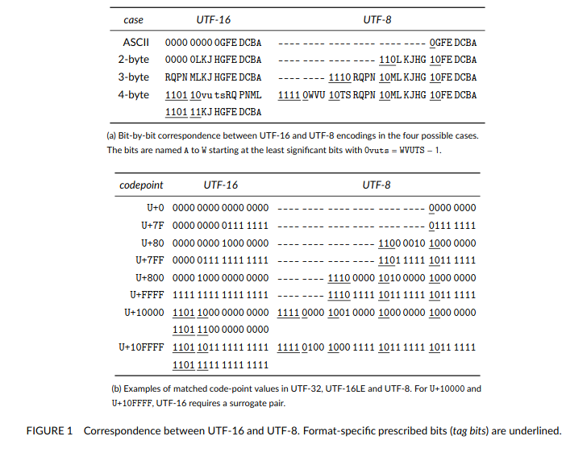

What is character encoding and why should I care?
If you’re like most programmers, your first encounter with character encoding was via an error like “Wrong encoding: Expected UTF-8 but got UTF-16 instead.” You then Googled it, copied and pasted some solution from Stack Overflow, and promptly forgot about it—similar to how you ignore car tires until you run over broken beer bottles.
However, just like humble tires, character encodings provide an essential service: they translate our alphabet (and more) into binary. To illustrate its importance, over 98% of web pages are encoded in UTF-8, but many Windows-based technologies (e.g., C#) use UTF-16 to represent strings internally. Latin1 is still used by many devices in Africa and developing regions.
Throughout history, there have been many iterations of character encodings. However, here we focus on the main ones: Latin1, UTF32, UTF16, and UTF8.
The simplest way to transcode characters is direct indexation, as used by ASCII, Latin1, and UTF32. However, there’s a drawback: the more characters you cover, the more memory the encoding will take. Latin1 and ASCII only take one byte to represent each character. UTF32, on the other hand, uses 32 bits for all 154,998 Unicode characters. This is wasteful, as the majority of text is still ASCII, meaning most of those 32 bits aren’t necessary.
To address this, we can use some bits to indicate how many bytes to use. Consider this table:1
In UTF-16, characters from U+0 to U+FFFF are mapped using 2 bytes. Rarer characters are mapped using 4 bytes with surrogates.
The first few bits indicate if a surrogate is required, and the remaining bits are concatenated to give the Unicode character. However, ASCII characters still take 2 bytes,
where only one is necessary. Enter UTF-8, which addresses this with a more efficient approach where the first few bits indicate how many bytes a unit will take :
| Byte Pattern | Description |
|---|---|
| 0 | Indicates an ASCII byte. |
| 11 | Indicates the first byte of a UTF-8 element requiring 2 bytes. |
| 111 | Indicates the first byte requiring 3 bytes. |
| 1111 | Indicates the first byte requiring 4 bytes. |
| 10 | Indicates a continuation byte. |
Errors in UTF-8 Validation
When validating UTF-8 encoding, we must check for the following errors:
enum error_code {
SUCCESS = 0,
HEADER_BITS, // Any byte must have fewer than 5 header bits.
TOO_SHORT, // The leading byte must be followed by N-1 continuation bytes, where N is the UTF-8 character length
// This is also the error when the input is truncated.
TOO_LONG, // We either have too many consecutive continuation bytes or the string starts with a continuation byte.
OVERLONG, // The decoded character must be above U+7F for two-byte characters, U+7FF for three-byte characters,
// and U+FFFF for four-byte characters.
TOO_LARGE, // The decoded character must be less than or equal to U+10FFFF, less than or equal to U+7F for ASCII OR less than or equal to U+FF for Latin1
SURROGATE, // The decoded character must be not be in U+D800...DFFF (UTF-8 or UTF-32) OR
// a high surrogate must be followed by a low surrogate and a low surrogate must be preceded by a high surrogate (UTF-16) OR
// there must be no surrogate at all (Latin1)
OTHER // Not related to validation/transcoding.
};
inline simdutf_warn_unused result validate_with_errors(const char *buf, size_t len) noexcept {
const uint8_t *data = reinterpret_cast(buf);
size_t pos = 0;
uint32_t code_point = 0;
while (pos < len) {
// check of the next 16 bytes are ascii.
size_t next_pos = pos + 16;
if (next_pos <= len) { // if it is safe to read 16 more bytes, check that they are ascii
uint64_t v1;
std::memcpy(&v1, data + pos, sizeof(uint64_t));
uint64_t v2;
std::memcpy(&v2, data + pos + sizeof(uint64_t), sizeof(uint64_t));
uint64_t v{v1 | v2};
if ((v & 0x8080808080808080) == 0) {
pos = next_pos;
continue;
}
}
unsigned char byte = data[pos];
while (byte < 0b10000000) {
if (++pos == len) { return result(error_code::SUCCESS, len); }
byte = data[pos];
}
if ((byte & 0b11100000) == 0b11000000) {
next_pos = pos + 2;
if (next_pos > len) { return result(error_code::TOO_SHORT, pos); }
if ((data[pos + 1] & 0b11000000) != 0b10000000) { return result(error_code::TOO_SHORT, pos); }
// range check
code_point = (byte & 0b00011111) << 6 | (data[pos + 1] & 0b00111111);
if ((code_point < 0x80) || (0x7ff < code_point)) { return result(error_code::OVERLONG, pos); }
} else if ((byte & 0b11110000) == 0b11100000) {
next_pos = pos + 3;
if (next_pos > len) { return result(error_code::TOO_SHORT, pos); }
if ((data[pos + 1] & 0b11000000) != 0b10000000) { return result(error_code::TOO_SHORT, pos); }
if ((data[pos + 2] & 0b11000000) != 0b10000000) { return result(error_code::TOO_SHORT, pos); }
// range check
code_point = (byte & 0b00001111) << 12 |
(data[pos + 1] & 0b00111111) << 6 |
(data[pos + 2] & 0b00111111);
if ((code_point < 0x800) || (0xffff < code_point)) { return result(error_code::OVERLONG, pos);}
if (0xd7ff < code_point && code_point < 0xe000) { return result(error_code::SURROGATE, pos); }
} else if ((byte & 0b11111000) == 0b11110000) { // 0b11110000
next_pos = pos + 4;
if (next_pos > len) { return result(error_code::TOO_SHORT, pos); }
if ((data[pos + 1] & 0b11000000) != 0b10000000) { return result(error_code::TOO_SHORT, pos); }
if ((data[pos + 2] & 0b11000000) != 0b10000000) { return result(error_code::TOO_SHORT, pos); }
if ((data[pos + 3] & 0b11000000) != 0b10000000) { return result(error_code::TOO_SHORT, pos); }
// range check
code_point =
(byte & 0b00000111) << 18 | (data[pos + 1] & 0b00111111) << 12 |
(data[pos + 2] & 0b00111111) << 6 | (data[pos + 3] & 0b00111111);
if (code_point <= 0xffff) { return result(error_code::OVERLONG, pos); }
if (0x10ffff < code_point) { return result(error_code::TOO_LARGE, pos); }
} else {
// we either have too many continuation bytes or an invalid leading byte
if ((byte & 0b11000000) == 0b10000000) { return result(error_code::TOO_LONG, pos); }
else { return result(error_code::HEADER_BITS, pos); }
}
pos = next_pos;
}
return result(error_code::SUCCESS, len);
}
unsigned char byte = data[pos];
if((byte & 0x80) == 0) { // if ASCII
// will generate one UTF-8 bytes
*utf8_output++ = char(byte);
pos++;
} else {
// will generate two UTF-8 bytes
*utf8_output++ = char((byte>>6) | 0b11000000);
*utf8_output++ = char((byte & 0b111111) | 0b10000000);
pos++;
}
inline result convert_with_errors(const char* buf, size_t len, char* latin_output) {
const uint8_t *data = reinterpret_cast(buf);
size_t pos = 0;
char* start{latin_output};
while (pos < len) {
// try to convert the next block of 16 ASCII bytes
if (pos + 16 <= len) { // if it is safe to read 16 more bytes, check that they are ascii
uint64_t v1;
::memcpy(&v1, data + pos, sizeof(uint64_t));
uint64_t v2;
::memcpy(&v2, data + pos + sizeof(uint64_t), sizeof(uint64_t));
uint64_t v{v1 | v2}; // We are only interested in these bits: 1000 1000 1000 1000...etc
if ((v & 0x8080808080808080) == 0) { // if NONE of these are set, e.g. all of them are zero, then everything is ASCII
size_t final_pos = pos + 16;
while(pos < final_pos) {
*latin_output++ = char(buf[pos]);
pos++;
}
continue;
}
}
// suppose it is not an all ASCII byte sequence
uint8_t leading_byte = data[pos]; // leading byte
if (leading_byte < 0b10000000) {
// converting one ASCII byte !!!
*latin_output++ = char(leading_byte);
pos++;
} else if ((leading_byte & 0b11100000) == 0b11000000) { // the first three bits indicate:
// We have a two-byte UTF-8
if(pos + 1 >= len) {
return result(error_code::TOO_SHORT, pos); } // minimal bound checking
if ((data[pos + 1] & 0b11000000) != 0b10000000) {
return result(error_code::TOO_SHORT, pos); } // checks if the next byte is a valid continuation byte in UTF-8. A valid continuation byte starts with 10.
// range check -
uint32_t code_point = (leading_byte & 0b00011111) << 6 | (data[pos + 1] & 0b00111111); // assembles the Unicode code point from the two bytes. It does this by discarding the leading 110 and 10 bits from the two bytes, shifting the remaining bits of the first byte, and then combining the results with a bitwise OR operation.
if (code_point < 0x80) {
return result(error_code::OVERLONG, pos);
}
if (0xFF < code_point) {
return result(error_code::TOO_LARGE, pos);
} // We only care about the range 129-255 which is Non-ASCII latin1 characters
*latin_output++ = char(code_point);
pos += 2;
} else if ((leading_byte & 0b11110000) == 0b11100000) {
// We have a three-byte UTF-8
return result(error_code::TOO_LARGE, pos);
} else if ((leading_byte & 0b11111000) == 0b11110000) { // 0b11110000
// we have a 4-byte UTF-8 word.
return result(error_code::TOO_LARGE, pos);
} else {
// we either have too many continuation bytes or an invalid leading byte
if ((leading_byte & 0b11000000) == 0b10000000) {
return result(error_code::TOO_LONG, pos);
}
return result(error_code::HEADER_BITS, pos);
}
}
return result(error_code::SUCCESS, latin_output - start);
}